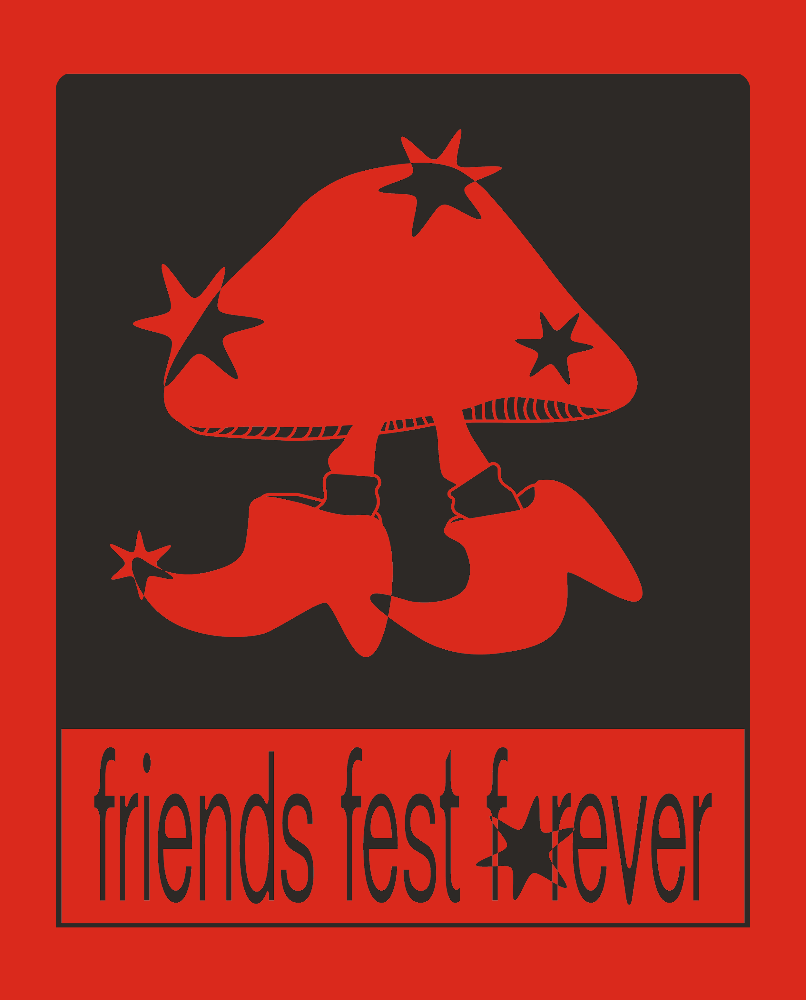
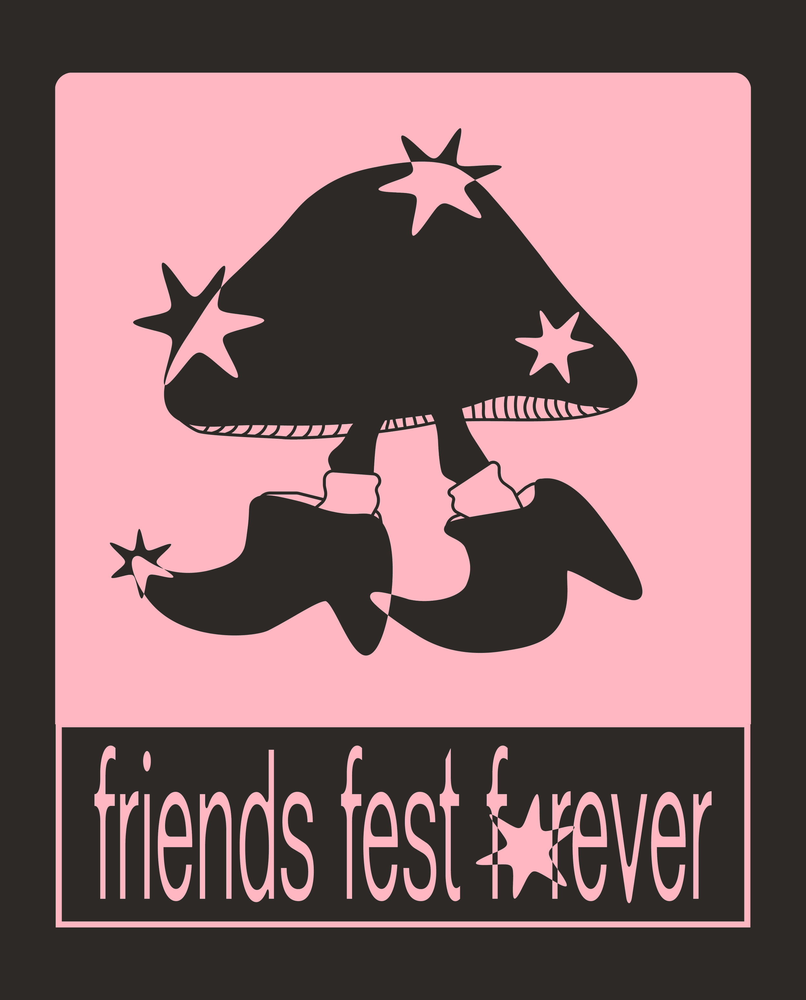
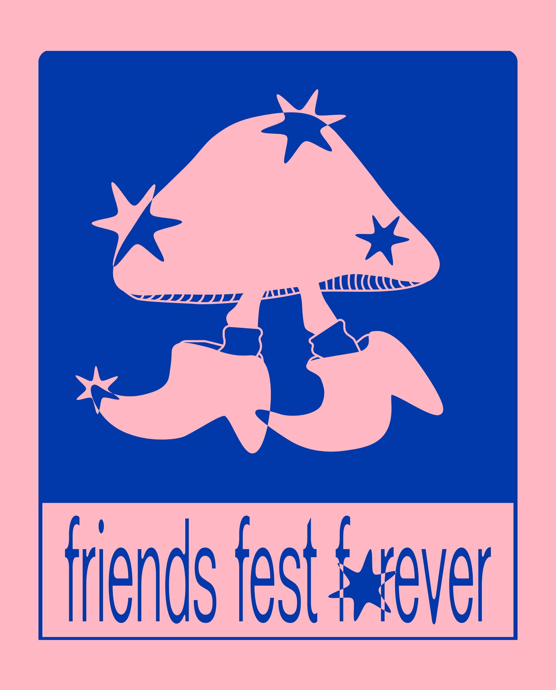
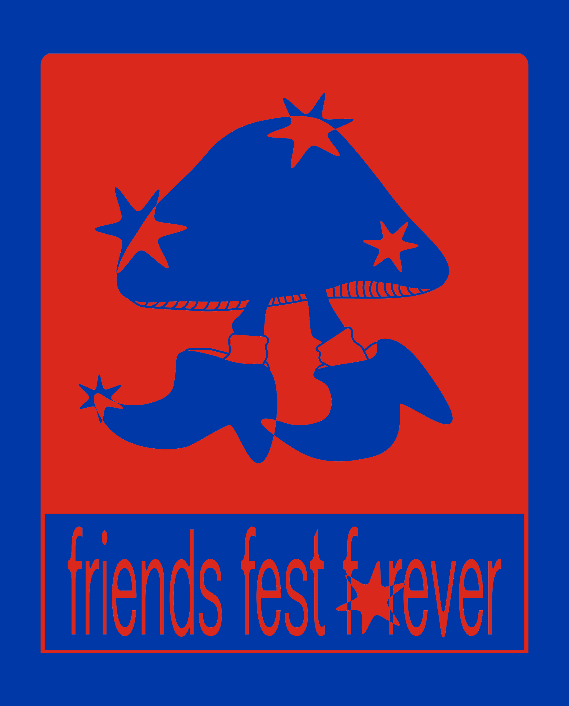
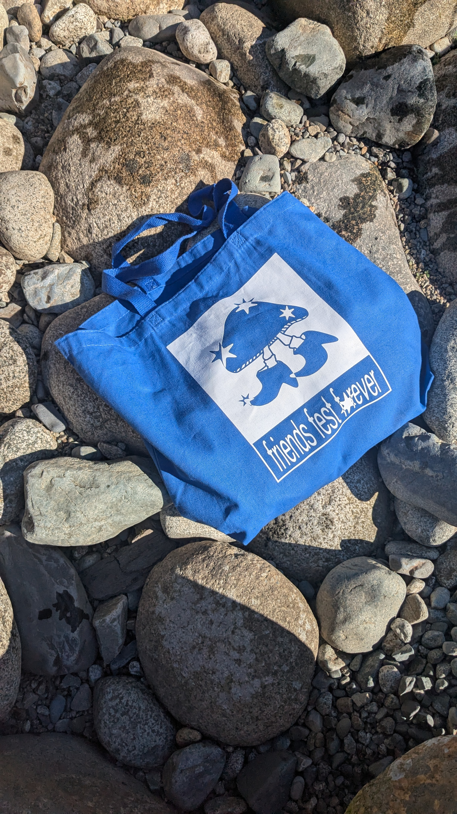

Friends Fest branding
Logo and visual identity for a community music festival in Squamish, BC, capturing the energy of live events through bold, eclectic branding.
2024 · Graphic Designer
CONCEPT
Come up with a mascot and a logomark for a community-based music festival. Since it was quite a tight-knit event, it just needed to be simple and screen-printable for a limited batch release of merch.
PROCESS
I came up with a number of different sketches for the logo. For me, the walking mushroom encapsulated the magic of the event and the expression of nature and being part of it for a weekend.
MATERIALS / FORMAT
Aside from tote bags, I also came up with some simple posters for wayfinding for the forest service road that was used.
REFLECTION
Most event-goers purchased a tote and, to this day, they relay compliments they receive.






